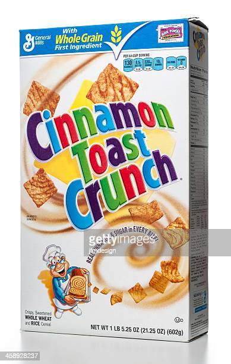

A Bowl Full of Cereal

Description
This is a sacred family recipe that I have been commissioned from on high to bestow upon you today. A breakfast (lunch and/or dinner) that begins with decadent cinnamon squares and finishes with a sweet, milky mustache. Yum!
Ingredients
- General Mills Cinnamon Toast Crunch (brand name is a must)
- Milk (the family recipe calls for the fresh, utter-to-pale variety but substitute as needed)
Steps
- Pour contents of cereal box into a large mixing bowl until it is about half full.
- Add desired amount of milk to bowl. (It is preferable to saturate all cinnamon squares to maximize sugar solubility, however, this is left to cook's choice)
- Add spoon and enjoy!
Pro-Tip: keep your milk-cereal ratio even by audibly slurping the excess milk regularly.